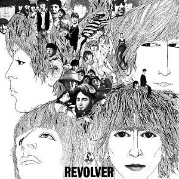

Inicio
Discografía
John Lennon
Paul McCartney
Ringo Starr
George Harrison
Comprar
Concurso
Discografia
Nombre
Lanzamiento
Portada
Please Please Me
1963
With the Beatles
A Hard Day's Night
1964
Beatles For Sale
Help!
1965
Rubber Soul
Revolver
1966

Sgt.Pepper's Lonely Hearts Club Band
1967
Magical Mystery Tour
The Beatles
1968
Yellow Submarine
1969
Abbey Road
Let It Be
1970